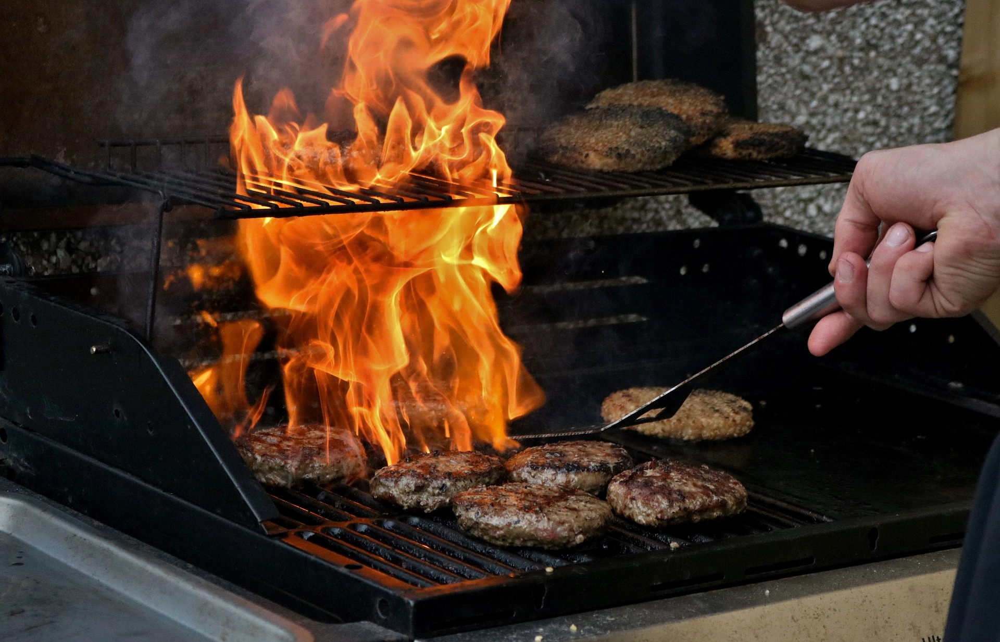

Como Preparamos Nossos Hambúrgueres
Publicado em por Burguer Art
Queremos compartilhar com você o processo cuidadoso e artesanal de preparação dos nossos deliciosos hambúrgueres. Na Burguer Art, a qualidade é a nossa prioridade, e isso começa com a seleção dos melhores ingredientes.
Nossos hambúrgueres são feitos com carne fresca de fazendas locais, moída diariamente para garantir a frescura e o sabor. A carne é temperada com uma mistura secreta de especiarias, que dá a cada hambúrguer o nosso sabor único.
Os vegetais são orgânicos e cortados à mão para garantir a melhor qualidade. O queijo derretido é cuidadosamente colocado sobre o hambúrguer grelhado no momento exato para uma experiência de sabor perfeita.
Nossos pães são assados diariamente, proporcionando a base perfeita para cada hambúrguer. Cada detalhe é importante, e acreditamos que esses esforços fazem a diferença no sabor final.
Esperamos que você aprecie a dedicação e o amor que colocamos em cada hambúrguer que servimos. É a nossa paixão por comida deliciosa que nos impulsiona, e mal podemos esperar para compartilhá-la com você!